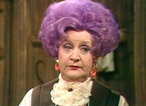

Are You Being Served?
Greetings Fans!
As we head into the holiday season, Carol is starting rehearsal for a new show. Carol has been cast as Mrs. Slocombe in Are You Being Served? with the Elgin Theatre Company. You may recognize the title as a British sitcom from the 1970s. The play is a British farce, and takes place in the fictional Grace Brothers Department Store, and Mrs. Slocombe is the head of the Ladies Separates & Underwear department.

It will be worth the price of admission just to see Carol with purple hair! The show will be at the Kimball Street Theater in the Rider Center of Elgin Academy, in Elgin. Show dates are January 8, 9, 15, 16, 22 and 23; Fridays and Saturdays at 8:00pm.
Tickets are $15 for adults or $12 for children and seniors. You can purchase tickets online here.
Originally published on the Blogspot site
Comments (1)
Archived from the original site.
Carol, is that you??? I love it. I look forward to figuring out which date to come see the performance.Kim O